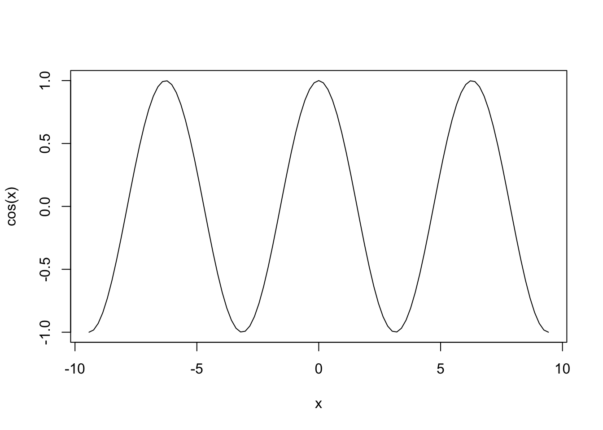

Brief introduction to R
SCII205: Introductory Geospatial Analysis / Practical No. 1
Alexandru T. Codilean
2025-02-25
Introduction
R is a powerful programming language and software environment designed primarily for statistical computing and graphics. Developed in the early 1990s, R has grown into one of the most widely used tools for data analysis, enabling users to perform tasks ranging from basic statistical tests to complex data modeling and visualization. Its extensive collection of packages, contributed by a global community, enhances its functionality and allows researchers, statisticians, and data scientists to apply a variety of analytical methods to diverse datasets.
The language’s open-source nature, governed by the GNU General Public License, has fostered a robust ecosystem where users continuously improve and expand its capabilities. Integrated development environments such as RStudio further simplify coding, debugging, and data visualization, making R accessible to both beginners and experts. Today, R is widely used across academic, governmental, and commercial sectors, underlining its importance as a key tool in the modern data-driven landscape.
In this introduction, we will cover the essentials of R, including basic syntax, data structures, reading data files, and plotting. By the end, you should have a working knowledge of how to handle common data analysis tasks in R.
R packages
The practical will primarily utilise R functions from the following packages:
The tidyverse: is a collection of R packages designed for data science, providing a cohesive set of tools for data manipulation, visualization, and analysis. It includes core packages such as ggplot2 for visualization, dplyr for data manipulation, tidyr for data tidying, and readr for data import, all following a consistent and intuitive syntax.
The GGally package: GGally is an extension of ggplot2 that simplifies the creation of complex plots and multi-panel visualizations. It provides functions like
ggpairsto quickly generate comprehensive pairwise plots, making it easier to explore relationships in multivariate data.
Resources
- Comprehensive documentation for R is available on the R Documentation page.
- The tidyverse library of packages documentation.
- The GGally package documentation.
Getting Started with R
Before diving into data analysis, it is important to understand some of the basic building blocks of R. The following section will cover fundamentals such as the basic syntax of the R language and main data structures.
Basic Syntax and Data Types
R is an interpreted language, meaning that you can execute commands interactively in the R console or by running scripts.
Arithmetic Operations
Main arithmetic operators include additions (+),
subtraction (-), multiplication (*), division
(\), raising to a power (^), etc.
## [1] 57## [1] 350Relational Operations
Relational operators are used to compare between values. Relational operators available in R, include:
- less than:
< - greater than:
> - less than or equal to:
<= - greater than or equal to:
>= - equal to
== - not equal to
!=
Note!: There is a difference between the equal to
operator (==) and = which is used to assigned
values to a variable (see below).
## [1] FALSE## [1] TRUE## [1] TRUEData Structures
R supports several types of data structures. The most common ones include:
Vectors
Vectors are one of the most fundamental data structures in R. They
are used to store sequences of data. We can use the function
c() (as in concatenate) to make vectors in R.
Arithmetic and relational operators also work on vectors. The variables used above are in fact single element vectors. All operations are carried out in element-wise fashion:
## [1] 10 8 12 18 14In the above example each element of the vector numbers
is multiplied by the value 2.
You can access the items of a vector by using [ ]
brackets. The number in the bracket specifies the element to be
accessed:
## [1] 8## [1] "Alice"Matrices
Matrices are two-dimensional arrays that hold elements of the same type.
## [,1] [,2] [,3]
## [1,] 1 4 7
## [2,] 2 5 8
## [3,] 3 6 9You can also create a matrix with strings:
my_matrix2 <- matrix(c("Alice", "Bob", "Charlie", "David"), nrow = 2, ncol = 2)
# Print the matrix
my_matrix2## [,1] [,2]
## [1,] "Alice" "Charlie"
## [2,] "Bob" "David"Same as with vectors, you can access the items of a matrix by using
[ ] brackets. The first number in the bracket specifies the
row-position, while the second number specifies the column-position:
## [1] 6## [1] 3 6 9## [1] 1 2 3Data Frames
Data frames are tabular data structures where each column can contain different types of data (e.g., numeric, character, factor).
my_data <- data.frame(
ID = 1:5,
Name = c("Alice", "Bob", "Charlie", "David", "Eva"),
Score = c(85, 90, 78, 92, 88)
)
# Print the data frame
my_data## ID Name Score
## 1 1 Alice 85
## 2 2 Bob 90
## 3 3 Charlie 78
## 4 4 David 92
## 5 5 Eva 88We can use single brackets [ ], double brackets
[[ ]] or $ to access columns from a data
frame:
## Name
## 1 Alice
## 2 Bob
## 3 Charlie
## 4 David
## 5 Eva## [1] "Alice"## [1] "Alice" "Bob" "Charlie" "David" "Eva"## [1] "Alice" "Bob" "Charlie" "David" "Eva"Lists
Lists are collections of objects that can contain elements of different types and structures. Accessing elements of a list is done in a similar way to accessing elements of a dataframe, a matrix, or a vector:
## $numbers
## [1] 1 2 3 4 5
##
## $matrix
## [,1] [,2] [,3]
## [1,] 1 4 7
## [2,] 2 5 8
## [3,] 3 6 9
##
## $data
## ID Name Score
## 1 1 Alice 85
## 2 2 Bob 90
## 3 3 Charlie 78
## 4 4 David 92
## 5 5 Eva 88## ID Name Score
## 1 1 Alice 85
## 2 2 Bob 90
## 3 3 Charlie 78
## 4 4 David 92
## 5 5 Eva 88## [1] 85 90 78 92 88Handling Data Files
A common task in data analysis is reading data from external files. R supports a wide range of data file types through both built-in functions and an extensive ecosystem of packages available on online repositories such as CRAN and Bioconductor.
Native R formats like .RData and .rds are
managed with functions such as load() and
readRDS(), while text-based formats — including CSV, other
delimited files, and fixed-width files — can be handled with functions
like read.csv(), read.table(), and
read.fwf(), or with more specialised packages like
readr.
Spreadsheet files (e.g., Excel .xls and
.xlsx) are accessible via packages such as
readxl and openxlsx, and structured
formats like JSON and XML are supported through packages like
jsonlite, rjson,
xml2, and XML. In addition, R can
import data from statistical software formats (SAS, SPSS, Stata) using
packages like haven and foreign,
connect to SQL databases through DBI and specific
drivers (e.g., RSQLite, RMySQL,
RPostgreSQL), and work with big data formats like
Parquet via the arrow package.
Specialised formats such as HDF5 and NetCDF, as well as GIS and spatial data formats, are also supported using packages like rhdf5, ncdf4, RNetCDF, sf, and terra.
Here we consider data stored in a CSV (Comma-Separated Values) file, as this is one of the most common formats used for storing tabular data.
Reading a CSV File
Use the read.csv() function to import a CSV file into R
as a data frame. The following example assumes that you have a file
named “east_coast_rivers.csv” in a sub-folder called “Data” that is
located in your working directory.
# Modify path and file name as needed
data <-
read.csv("./data/data_intro/east_coast_rivers.csv",
header = TRUE, sep = ",")The CSV file contains cosmogenic beryllium-10 derived erosion rates
(Erosion_Rate) and various topographic and climatic metrics
(e.g., Mean_Slope and Mean_Rainfall) for
rivers draining the eastern seaboard of Australia. The data file also
includes several columns that identify the drainage basin (i.e.,
Drainage_Basin and Basin_Code) and whether the
data pertains to the main stem (Group_No = 1) or a
tributary (Group_No = 0).
The following will display the first few rows of the dataset:
read.csv() assumes that the CSV file uses the comma
delimiter. If the CSV file you have uses a different delimiter (such as
a semicolon), you can use the sep parameter to specify the
delimiter used:
Writing Data to a File
After processing data, you might want to save your results. Use
write.csv() to export a data frame to a CSV file. In the
next example, we drop the second and fourth columns from the data frame
and then save to a new file:
# Specify the columns to drop.
columns_to_drop <- c("Group","Drainage_Basin")
# Keep only columns NOT in 'columns_to_drop'
data_clean <- data[, !(names(data) %in% columns_to_drop)]
head(data_clean)Plotting in R
Visualizing data is crucial for understanding patterns and insights. R offers several plotting systems; here, we cover the base plotting system and provide an introduction to the Tidyverse R ecosystem that includes the popular ggplot2 plotting package.
Base R Plotting
The base plotting functions in R are straightforward and useful for quick visualizations.
Example: Math Functions
You can treat R like a graphing calculator, using the
curve() function. Try, for example, typing in the following
statement:

This statement plots the cosine function \(f(x) = \cos(x)\) over the domain \(-3\pi \le x \le 3\pi\). The three inputs to
the curve() function are called arguments:
cos(x)is the curve to plotfrom=-3*piandto=3*piindicate to R that you want to start the curve at \(x=-3\pi\) and end it at \(x=3\pi\).
Example: Scatter Plot
To produce a simple scatter plot, use the plot function.
In the next example we will use the CSV file we loaded earlier and plot
erosion rate versus mean slope.
# Assign data to x and y
x <- data$Mean_Slope
y <- data$Erosion_Rate
# Create a scatter plot
plot(x, y,
main = "Scatter Plot of Erosion Rate vs. Mean Slope",
xlab = "Mean basin slope [m/km]",
ylab = "Erosion rate [mm/kyr]",
pch = 1, # 0 is for a square, 1 is for a circle, 3 is for a triangle...
col = "red")The following chunk of R script will plot only those data that
originate from tributary channels (i.e., Group_No = 0). It
will also fit a liner model through the data using the lm()
function:
# Subset the data based on a condition in a different column
subset_data <- data[data$Group_No == "0", ]
# Assign data to x and y
x <- subset_data$Mean_Slope
y <- subset_data$Erosion_Rate
# Create a scatter plot
plot(x, y,
main = "Scatter Plot of Erosion Rate vs. Mean Slope",
xlab = "Mean basin slope [m/km]",
ylab = "Erosion rate [mm/kyr]",
pch = 1, # 0 is for a square, 1 is for a circle, 3 is for a triangle...
col = "red")
# Fit a linear model to the data
model <- lm(y ~ x, data = subset_data)
# Generate a sequence of x values over the range of the data for plotting the trendline
newx <- seq(min(x, na.rm = TRUE), max(x, na.rm = TRUE), length.out = 100)
# Predict y values from the model based on the sequence of x values
newy <- predict(model, newdata = data.frame(x = newx))
# Add the trendline to the plot
lines(newx, newy, col = "blue", lwd = 2)Example: Histogram
The next example creates a histogram of mean basin slope values
stored in the Mean_Slope column of the CSV file loaded
earlier:
# Assign data to x
x <- data$Mean_Slope
# Plot histogram
hist(x,
main = "Histogram of Mean Slope",
xlab = "Mean basin slope [m/km]",
col = "lightgreen",
border = "black")We can show multiple plots side by side using the par
function. In the next example we plot three histograms for selected
columns from the loaded CSV file and overlay kernel density curves on
top of each histogram:
# Define a vector of column names for which you want smoother histograms
cols <- c("Mean_Slope", "Mean_Rainfall","Erosion_Rate")
# Set up the plotting area:
# 1 row with as many columns as there are elements in 'cols'
par(mfrow = c(1, length(cols)))
# Loop through each specified column and plot its histogram
# with an overlaid density curve
for (col in cols) {
# Extract data for the current column
x <- data[[col]]
# Plot histogram with density scaling (freq = FALSE) so that
# the y-axis represents a density
hist(x,
main = paste("Histogram of", col),
xlab = col,
col = "lightgreen",
border = "black",
freq = FALSE) # Use density instead of counts
# Compute the kernel density estimate
dens <- density(x, na.rm = TRUE)
# Overlay the density curve (kernel density estimate)
lines(dens, col = "blue", lwd = 2)
}
Explanation:
The
colsvector lists the column names from your data frame for which you want to generate histograms.par(mfrow = c(1, length(cols)))arranges the plotting window into one row and as many columns as there are elements incols, so that the histograms appear in a single line.The
forloop iterates through each column name incols, usesdata[[col]]to extract the column from the data frame, and then callshist()to plot the histogram. The title and x-axis label are dynamically generated usingpaste("Histogram of", col).The
hist()function is used with the argumentfreq = FALSE, which scales the y-axis to represent probability densities rather than raw counts. This makes it easier to overlay the kernel density estimate.The
density()function calculates a smoothed density estimate of the data. The resulting density curve is then added to the histogram usinglines(), providing a smoother appearance.
Tidyverse and ggplot2
The Tidyverse is a cohesive ecosystem of R packages that share a common design philosophy and data structures, making data manipulation, visualization, and analysis more intuitive. The Tidyverse emphasises the concept of “tidy data”, where each variable is a column, each observation is a row, and each type of observational unit forms a table. Core packages include:
ggplot2: for creating sophisticated data visualizations.dplyr: for efficient data manipulation.tidyr: for tidying and reshaping data.readr: for fast data import.purrr: for functional programming and iterative operations.
Together, these packages facilitate reproducible and streamlined data workflows, making the Tidyverse a popular choice among both beginners and seasoned data scientists.
Installing the Tidyverse
Before you can use the Tidyverse packages, you need to install and load them into your R session. Run the following command in your R console to install the Tidyverse (if it isn’t already installed):
Load the Tidyverse library by running:
This command loads several core packages (including, dplyr, ggplot2, tidyr, readr), some of which we will use for different tasks next.
Data wrangling with dplyr
In the next example we use functions from the dplyr
package to filter our data and remove all data points with
Group_No not equal to zero (i.e, main stem samples), and
then calculate the median and mean erosion rate and basin slope for each
river basin (i.e., we group data together based on
Basin_Code):
# Use dplyr functions to filter and arrange the data
# Below "data" is the name we assigned earlier to the CSV file
filtered_data <- data %>%
filter(Group_No == 0) %>% # Leave only basins with Group_No = 0
group_by(Basin_Code) %>% # Group by Basin_Code
summarise_at(c("Erosion_Rate", "Mean_Slope"),list(mean,median)) # Calc. mean and median
# Display the filtered data
head(filtered_data)In the above example %>% is the pipe operator that
passes the result from one function to the next.
Plotting with ggplot2
Example 1
The following example uses the dplyr package to filter the data so that drainage basins with less than five data points are dropped (i.e., if “Drainage_Basin” — or “Basin_Code” as the two represent the same — has less than five entries, that basin is dropped). It then uses ggplot2 to display box plots of erosion rate values for each basin.
# Filter out groups with less than 5 data points
filtered_data <- data %>%
group_by(Drainage_Basin) %>%
filter(n() >= 5) %>%
ungroup()
# Create the box plot using the filtered data
ggplot(filtered_data,
aes(x = Drainage_Basin,
y = Erosion_Rate,
fill = Drainage_Basin)
) +
geom_boxplot() +
labs(
title = "Box Plot of Erosion Rate by Drainage Basin",
x = "Drainage Basin",
y = "Erosion Rate [mm/kyr]"
)Explanation:
We use
group_by(Drainage_Basin)to group the data by theDrainage_Basincolumn.filter(n() >= 5)retains only those groups that have five or more observations.ungroup()is called afterward to remove the grouping before plotting.The filtered dataset (
filtered_data) is then passed toggplot().A box plot is created with
geom_boxplot(), and the aesthetics are mapped accordingly.
Example 2
In the next example we use ggplot2 to display scatter plots for each drainage basins, plotting erosion rate vs. mean slope:
# Filter out groups with less than 5 data points and
# add an index within each group for plotting
data_filtered <- data %>%
group_by(Drainage_Basin) %>%
filter(n() >= 5) %>%
ungroup()
# Create the scatter plot with separate panels for each Drainage_Basin group
ggplot(data_filtered,
aes(x = Mean_Slope, y = Erosion_Rate)
) +
geom_point(color = "blue", size = 1.5) +
facet_wrap(~ Drainage_Basin, scales = "free") +
labs(
title = "Scatter Plot of Erosion Rate vs. Mean Slope by Drainage Basin",
x = "Mean Basin Slope [m/km]",
y = "Erosion Rate [mm/kyr]"
)Explanation:
geom_point(...): Adds the scatter plot points.facet_wrap(~ Drainage_Basin, scales = "free"): Creates separate panels for each level ofDrainage_Basin. The optionscales = "free"allows each panel to have its own x-axis and y-axis scales (since the magnitude of values may differ across groups).
To add error bars to the above plot, we can modify the code as follows:
ggplot(data_filtered, aes(x = Mean_Slope, y = Erosion_Rate)) +
geom_point(color = "blue", size = 1.5) +
geom_errorbar(aes(ymin = Erosion_Rate - Erosion_Rate_Error,
ymax = Erosion_Rate + Erosion_Rate_Error),
color = "blue") +
facet_wrap(~ Drainage_Basin, scales = "free") +
labs(
title = "Scatter Plot of Erosion Rate vs. Mean Slope by Drainage Basin",
x = "Mean Basin Slope [m/km]",
y = "Erosion Rate [mm/kyr]"
)Example 3
In the final example, we use ggplot2 to do a correlation matrix using erosion rate and a number of topographic and climatic metrics. Before we can proceed we need to install the GGally package that extends the functionality of ggplot2.
Load the GGally package by running:
Make the plot:
# Filter data to drop certain columns
data_clean <- data_filtered %>%
select(-SMPID2,
-Group,
-Group_No,
-Basin_Code,
-Area_km2,
-Cent_Lat,
-Erosion_Rate_Error,
-Mean_Channel_Steepness
) %>%
# Rename remaining columns with sorter names
rename(Eros.Rate = Erosion_Rate,
Slope = Mean_Slope,
Elevation = Mean_Elevation,
Relief = Mean_Relief,
Rainfall = Mean_Rainfall
) %>%
# Filter out groups with less than 15 data points
group_by(Drainage_Basin) %>%
filter(n() >= 15) %>%
ungroup()
# Inspect filtered data
head(data_clean)Explanation:
The
select()function is used to choose columns.By preceding column names with a minus sign (
-), you indicate that these columns should be removed.
Next we will group the data using Drainage_Basin and
redo the plot:
# Plot correlation matrix with groups
ggpairs(data_clean, # Data frame
columns = 2:6, # Columns to plot
aes(color = Drainage_Basin, # Color by basins
alpha = 0.5), # Transparency
upper = list(continuous = wrap("cor", size = 2.5)), # Font size in the upper panels
lower = list(continuous = "smooth") # Add trend lines to scatter plots
) Summary
In this introduction, we covered the essentials of R, including basic syntax, data structures, reading data files, and plotting. We explored each of these fundamental components step-by-step to build a solid foundation for your data analysis skills. By the end, you should had acquired a working knowledge of how to handle common data analysis tasks in R. In Practical No. 2 we will explore the basics of handling spatial data in R.
List of R functions
This practical showcased a diverse range of R functions. A summary of these is presented below:
base R functions
c(): concatenates its arguments to create a vector, which is one of the most fundamental data structures in R. It is used to combine numbers, strings, and other objects into a single vector.cos(): computes the cosine of an angle provided in radians, serving as a basic trigonometric operation in R. It is commonly used in mathematical computations and plotting periodic functions.curve(): plots a curve based on a mathematical expression over a specified range of x values. It is useful for quickly visualizing functions without the need to generate a complete dataset.data.frame(): creates a table-like structure where each column can hold different types of data. It is a primary data structure for storing and manipulating datasets in R.density(): computes a kernel density estimate to provide a smoothed approximation of a continuous variable’s distribution. It is often used to visualise the underlying probability density in data.head(): returns the first few elements or rows of an object, such as a vector, matrix, or data frame. It is a convenient tool for quickly inspecting the structure and content of data.hist(): creates a histogram to display the frequency distribution of a numerical dataset. It is a fundamental tool for exploring the shape and spread of data distributions.install.packages(): downloads and installs R packages from CRAN or other repositories into your local library. It extends R’s functionality by providing access to additional tools and resources.library(): loads an installed package into the current R session, making its functions and datasets available. It is essential for expanding R’s capabilities by using external packages.lines(): adds line segments to an existing plot, allowing you to overlay additional information such as trend lines or fitted curves. It is often used to enhance visualizations by supplementing existing plots.list(): creates an ordered collection that can store elements of different types and sizes. It is a flexible data structure that can hold vectors, matrices, data frames, and even other lists.lm(): fits linear models to data using the method of least squares, enabling regression analysis. It is widely used for modeling relationships between a dependent variable and one or more independent variables.matrix(): constructs a matrix by arranging a sequence of elements into specified rows and columns. It is fundamental for performing matrix computations and linear algebra operations in R.max(): returns the largest value from a set of numbers or a numeric vector. It is used to identify the upper bound of data values in a dataset.mean(): calculates the arithmetic average of a numeric vector, representing the central tendency of the data. It is a basic statistical measure frequently used in data analysis.median(): returns the middle value of a sorted numeric vector, providing a robust measure of central tendency. It is particularly useful when the data distribution is skewed or contains outliers.min(): returns the smallest value from a set of numbers or a numeric vector. It is commonly used to determine the lower bound of a dataset.names(): retrieves or sets the names attribute of an object, such as the column names of a data frame or the element names of a list. It is crucial for managing and accessing labels within R data structures.par(): sets or queries graphical parameters in R, such as margins, layout, and plotting symbols. It provides fine control over the appearance and arrangement of plots.paste(): concatenates strings together, converting non-character data into character format as needed. It is commonly used to generate dynamic labels, messages, or file names in R.plot(): is a generic plotting function that creates various types of graphs, including scatter plots and line charts. It serves as the foundation of base R graphics, allowing for flexible data visualization.predict(): generates predicted values from a fitted model object using new data if provided. It is a key tool for model evaluation and forecasting in regression analysis.read.csv(): imports data from a CSV file into R by converting it into a data frame. It automatically handles comma-separated values and is widely used for data import.seq(): generates regular sequences of numbers based on specified start, end, and increment values. It is essential for creating vectors that represent ranges or intervals.write.csv(): exports a data frame to a CSV file, enabling you to save processed data to disk. It is commonly used for sharing results with other applications or collaborators.
tidyverse functions
%>%(pipe operator): passes the output of one function directly as the input to the next, creating a clear and readable chain of operations. It is a hallmark of the tidyverse, promoting an intuitive coding style.aes(): defines aesthetic mappings in ggplot2 by linking data variables to visual properties such as color, size, and shape. It serves as the blueprint for representing data accurately in plots.facet_wrap(): splits a ggplot2 plot into multiple panels based on a factor variable, allowing for side-by-side comparison of subsets. It automatically arranges panels into a grid to reveal patterns across groups.filter(): subsets rows of a data frame based on specified logical conditions. It is a fundamental tool for extracting relevant data from a dataset.geom_boxplot(): creates box-and-whisker plots in ggplot2, summarizing data distributions through quartiles and highlighting outliers. It is a powerful tool for comparing distributions across groups.geom_errorbar(): overlays error bars on a ggplot2 plot to represent variability or uncertainty in the data. It is commonly used to display confidence intervals or standard errors alongside data points.geom_point(): adds points to a ggplot2 plot, producing scatter plots that depict the relationship between two continuous variables. It is a fundamental component for visualizing individual observations.ggplot(): initialises a ggplot object and establishes the framework for creating plots using the grammar of graphics. It allows for incremental addition of layers, scales, and themes to build complex visualizations.group_by(): organises a data frame into groups based on one or more variables, preparing it for aggregate operations. It facilitates calculations within each subset of data.labs(): allows you to add or modify labels in a ggplot2 plot, such as titles, axis labels, and captions. It enhances the readability and interpretability of visualizations.n(): returns the number of observations within the current group, typically used inside summarise() to count rows. It is useful for quantifying the size of data groups.rename(): changes column names in a data frame to make them more descriptive or consistent. It is an important tool for data cleaning and organization.summarise_at(): applies summary functions to specified columns of a data frame, usually within grouped data. It streamlines the calculation of multiple summary statistics for selected variables.select(): extracts specific columns from a data frame, simplifying data manipulation by excluding unwanted variables. It is used to create a streamlined dataset for analysis.ungroup(): removes grouping from a data frame that was previously grouped using group_by(). It resets the data structure to prevent unintended effects on subsequent analyses.
GGally functions
ggpairs(): creates a matrix of plots that displays pairwise relationships among multiple variables. It provides an at-a-glance view of correlations and distributions in multivariate datasets.wrap(): customises individual plot elements such as text or correlation labels in GGally. It allows adjustments to appearance and formatting for clearer visualization.